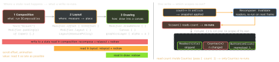

cross-platform · folio
In one line: Compose re-runs a composable only if it read snapshot State that
was written; the phase of the read decides how much work follows
(composition → layout → draw), and a re-run parent skips a child whose
parameters are stable and equal (strong skipping: unstable ones compared by
===). Performance work = read later, read lower, keep inputs stable.
Download PDF Print view LaTeX source


Composition & the snapshot system
- The compiler adds
$composer+$changedbitmask params; results live in the slot table. Identity = call site + call order;key(id){}gives it explicitly (loops, reordering). mutableStateOfis a snapshot object (MVCC). Each phase runs under a read observer recording which scope read which state; an applied write invalidates exactly those scopes; many writes per frame = one recomposition.- Recompose scope = a restartable (non-inline,
Unit-returning) composable.Column/Row/Boxareinline: their content re-runs with the caller. A content lambda is its own scope (“donut-hole skipping”). - Backwards write (write after reading in the same composition) → endless recomposition.
Stability & skipping
- Stable =
equalsforever consistent, public changes notify composition, all public props stable: primitives,String, function types,val-only classes of those. Unstable: anyvar,List/Set/Map, classes from a module without the Compose compiler. @Immutable= never changes after construction;@Stable= may change but only throughState. Promises, not checks — lie and the UI goes stale.- Strong skipping (default since Kotlin 2.0.20): every restartable composable is skippable; unstable params compared by
===(instance), stable byequals; every lambda is auto-remembered, keyed on its captures. Opt out:@NonSkippableComposable,@DontMemoize. - Today’s bug: a new instance each pass (
list.filter{}in the body) →!==→ re-run. Fix:remember,ImmutableList(kotlinx),@Immutable, or astabilityConfigurationFile.
Example
@Immutable data class Item(val id: Long, val kind: Kind,
val tags: ImmutableList<String>)
@Composable fun Feed(items: ImmutableList<Item>) {
val list = rememberLazyListState()
val showTop by remember { // recompose only on the flip
derivedStateOf { list.firstVisibleItemIndex > 0 } }
Header(Modifier.offset { // read in LAYOUT, not composition
IntOffset(0, -list.firstVisibleItemScrollOffset / 2) })
LazyColumn(state = list) {
items(items, key = { it.id }, contentType = { it.kind }) {
ItemRow(it) } // key: state follows the item
}
if (showTop) ScrollTopButton()
}vs SwiftUI: both track reads (@Observable in body ≈ snapshot reads); SwiftUI diffs view values by structural identity + .id(), Compose re-runs functions and skips by parameter equality.
remember family — when which
remember(k1, k2) {}: recompute when a key changes (like React’suseMemowith deps).rememberSaveable: + rotation and process death (Bundle orSaver).derivedStateOf(insideremember): only when the input changes more often than the output (scroll index → Boolean); elseremember(x).- Lazy lists:
key(default = index) keeps item state across inserts and moves;contentTypereuses compositions between same-type items.
Side effects — beyond the basics
LaunchedEffect(k): new key ⇒ cancel + relaunch; to call the latest lambda without restarting,rememberUpdatedState.DisposableEffect(k)must end inonDispose{};SideEffect{}runs after every successful composition.produceState: source →State;snapshotFlow{}:State→ coldFlowof distinct values (analytics, debounce).
@Composable fun Splash(onTimeout: () -> Unit) {
val latest by rememberUpdatedState(onTimeout)
LaunchedEffect(Unit) { delay(3_000); latest() } // no restart
}Measure, don’t guess
- Compiler reports (
composeCompiler { reportsDestination }, release build):-composables.txt=restartable skippable+ per-paramstable/unstable;-classes.txt= inferred stability. - Layout Inspector: recomposition + skip counts per node. Judge jank on release only.
Traps
- Scroll offset read in composition → recompose every frame.
- Strong skipping + a fresh
Listper pass → still re-runs. LaunchedEffect(Unit)+ captured callback → stale.
Remember: read later (draw > layout > composition), read lower (small scopes), same instance or stable type.